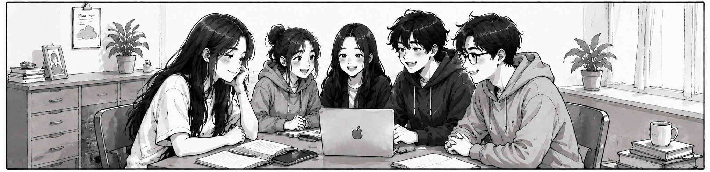
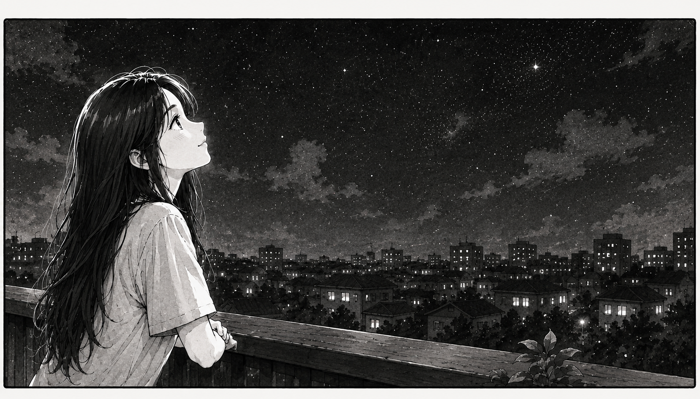

After months of darkness, pressure, and homesickness, the emotional burden I had been carrying continued to grow. However, with time, I slowly adjusted to my new life and began to fit in with those around me. The feelings of confusion and pressure that once weighed heavily on me started to fade away. As I overcame each challenge, I grew more confident and learned to believe in myself.
There were times when I sat in class, listening to my classmates talk, yet I could barely understand what they were saying.

But this time, I refused to stay silent. I gathered the courage to ask them to repeat what they had said, no matter what they might think of me.

But unlike what I had imagined, they did not avoid or judge me at all. Instead, they were patient, supportive, and always willing to explain things again when I did not understand. Their kindness brought me a sense of warmth and comfort after so many difficult days.

Eventually, I was fortunate enough to find wonderful friends who stood by my side through difficult times. In this foreign land, they became a source of comfort and support, caring for me like family when my parents were thousands of miles away.

After overcoming all those invisible pressures, I gradually regained my composure and became more mature. This was the path I had chosen for myself, and giving up was never an option.
Gradually, I adapted to my new life, became more comfortable with the workload, and started achieving the results I had been working toward.

I found a part-time job to help support myself and reduce the burden on my parents. As I learned to manage my time better and adapted to my new environment, life became much easier. After years of hard work and determination, my efforts finally paid off.

Sometimes, I would quietly look up at the sky and smile with a sense of satisfaction. The path I had chosen was not an easy one, but I never regretted it.

Gradually, I stopped being afraid of starting conversations with others.

I no longer felt burdened by academic pressure and had finally achieved the grades I had hoped for.

Gradually, everything fell into place. The struggles that once seemed overwhelming no longer held me back, and I had learned how to thrive in this new environment without fear or doubt.

Although I still missed home from time to time, I knew this was the path I had chosen. I had to keep moving forward and never give up.